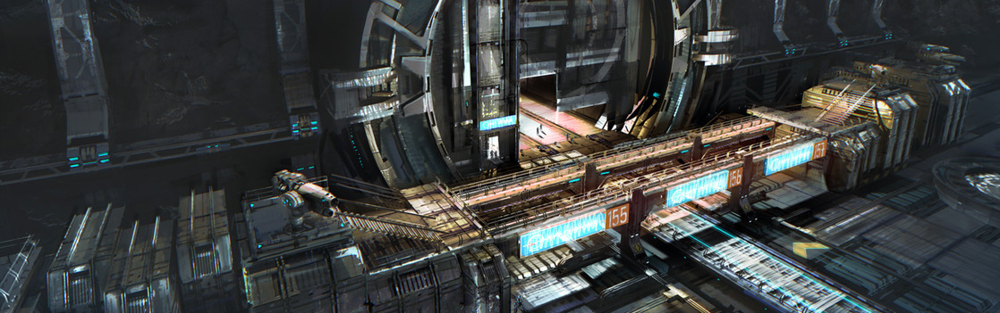

SYSTEM: NYX

Excurs - System: Nyx
Nyx wurde im Jahr 2582, während des Höhepunkts der territorialen Expansion des neu gegründeten United Empire of Earth, entdeckt. Das System besteht aus drei, nicht weiter bemerkenswerten Planeten, welche einen F-Typ Hauptsequenz Stern umkreisen. Astronomisch gesehen ist der interessanteste Aspekt von Nyx, dass sich das System direkt an der Grenze zu einem dunklen Nebel befindet, welcher die Orbits aller drei Welten einhüllt. Die Gase des Nebels schränken die Sicht stark ein und limitieren signifikantdie nutzungvon scannern… etwas, worauf sich die wenigen Bewohner des Systems verlassen.
Das System wurde zuerst Das System wurde zuerst über einen Sprungpunkt vom Stanton System aus, durch die AlleingängerNavigationsjumperin Carla Larry, kartiert. Carlas offizieller Anspruch spezifiziert nicht besonders viel Interesse am System, da es diesem „an signifikanten Mineralablagerungen und logischen Gründen für die Kosten von Terraforming mangelt“. Larry unternahm den Versuch, die drei Welten des Sterns formal Lou, Morgan und Ashley zu nennen, welche anscheinend drei ihrer romantischen Eroberungen waren. Nach üblichen Grundsätzen erkannte das UEE diese Namen jedoch nicht an. Die Namen wurden daher nicht weitläufig verwendet. Ob die furchtlose Entdeckerin des Systems irgendeinen der Namensvettern der Planeten damit beeindrucken konnte, ging in der Geschichte verloren. In den letzten zwei Jahrhunderten gewann Nyx ein wenig extra Reputation als Zwischenstopp auf dem Castra-Stanton-Run, durch den sich signifikante Credit-Werte in Form von Ladung zu jedem Zeitpunkt durch das System bewegen.
“Um Levski vollständig zu verstehen, muss man die handgefertigte Statue des Anthony Tanaka besuchen, desjenigen Jungen, dessen Tod eine Initialzündung für die Anti-Messer-Bewegung gewesen ist. Während es noch andere Denkmäler von Tanaka in der UEE gibt, ist keine so schön und ausdrucksstark wie diese.“ – Observist Dark, 2945.09.16
Das System wurde zuerst Das System wurde zuerst über einen Sprungpunkt vom Stanton System aus, durch die AlleingängerNavigationsjumperin Carla Larry, kartiert. Carlas offizieller Anspruch spezifiziert nicht besonders viel Interesse am System, da es diesem „an signifikanten Mineralablagerungen und logischen Gründen für die Kosten von Terraforming mangelt“. Larry unternahm den Versuch, die drei Welten des Sterns formal Lou, Morgan und Ashley zu nennen, welche anscheinend drei ihrer romantischen Eroberungen waren. Nach üblichen Grundsätzen erkannte das UEE diese Namen jedoch nicht an. Die Namen wurden daher nicht weitläufig verwendet. Ob die furchtlose Entdeckerin des Systems irgendeinen der Namensvettern der Planeten damit beeindrucken konnte, ging in der Geschichte verloren. In den letzten zwei Jahrhunderten gewann Nyx ein wenig extra Reputation als Zwischenstopp auf dem Castra-Stanton-Run, durch den sich signifikante Credit-Werte in Form von Ladung zu jedem Zeitpunkt durch das System bewegen.
Nyx I
Der erste Planet des Nyx Systems ist ein eine kernlose, hitzegebeutelte Welt, die schon vor langer Zeit ihrer wertvollen Mineralien beraubt wurde. Bald nachdem das System entdeckt worden war, enthüllte eine Routineerkundung die Präsenz von hochwertigen Metallen unter der Planetenoberfläche. Nachdem sich diese Nachricht verbreitet hatte, rückte der Planet kurze Zeit in den Fokus eines Militär-unterstützten Bergbauvertrages mit Gold Horizon. Innerhalb von 50 Jahren war der Planet von all seinen Ressourcen befreit und sämtlicher materieller Reichtum nach Kilian verschifft, um das Empire in seinen Kriegsbemühungen zu unterstützen. Im Jahre 2630 war Nyx I vollständig nutzlos geworden und nur wenige Beweise von menschlicher Anwesenheit blieben zurück.Nyx II
Als verrauchte, desolate Welt wurde Nyx II als Grenzfall für das Terraforming betrachtet. Dicke Wolken aus Säure und Kohlenstoffdioxid umgeben die Welt und der Planet liegt technisch gesehen am inneren Rand des grünen Bandes des Systems. Dennoch wurde eine Studie durchgeführt, ob es irgendwie möglich sein könnte, den Planeten bewohnbar zu machen. Das Ergebnis war, dass es möglich sei, es aber Generationen an Aufwand bedeuten würde. Gleichzeitig würde das Ergebnis wenig mehr sein als eine gut in den Nebelgasen versteckte Basis. EVA auf dem Planeten selbst würde weiterhin tödlich sein. Selbst Erkundungsschiffe, die vor den korrosiven Elementen geschützt sind, wären aufgrund der Hochdruck-Atmosphäre nicht funktionsfähig.Asteroiden und Delamar
Ein dichter Asteroidengürtel umkreist Nyxs Stern in etwa acht AU Abstand. Das Asteroidenfeld ist keine Quelle wertvoller Mineralien, aber gekoppelt mit dem Nebel ist es ein guter Ort, um sich zu verstecken. Eine unbekannte Zahl kleiner Siedlungen wurde auf Asteroiden in der Gegend gegründet, die alle vom Import überlebensnotwendiger Güter von außerhalb des Systems abhängig sind. Diese kleinen, nicht kartierten Basen sind die Heimat von Kolonisten, die nach allem Möglichen suchen – von einem Leben außerhalb des UEE bis hin zu einer Plattform, von der aus man außerhalb des Gesetzes operieren kann. Piratenüberfälle im System gehen vermutlich von den größeren Basen des Feldes aus. Das Highlight dieser Siedlungen ist Delamar, der größte der Asteroiden. Mit einer Größe eines Planetoiden ist Delamar tief im Nyx Gürtel versteckt. Die Siedlung wurde von Freidenkern während der unterdrückenden Messer-Ära gegründet und ist bis heute eine Brutstätte für politische Radikale und Anti-UEE Stimmung. Viele Kriminelle sind dorthin gezogen. Dies führte zu einem anhaltenden Konflikt zwischen kleinen, kriminellen Gruppen und den politischen Radikalen. Letztere sind der Meinung, dass die offenen illegalen Aktivitäten ihre Nachricht unterminiert. Delamar kann von jedem besucht werden, der das System durchquert, jedoch existiert ein starkes Paranoia-Gefühl. Jeder, der mit dem Betrieb der Station zu tun hat, lebt ständig in der Angst vor einer massiven Polizei-Razzia, die stets kurz vor der Tür zu stehen scheint. Die Wahrheit ist jedoch, dass der Mini-Mond so gut versteckt und so schwer zu erreichen ist, dass das UEE bisher nie ernsthaft in Betracht gezogen hat, Kräfte zu dessen Eliminierung zu schicken.Nyx III
Der letzte Planet im Nyx System ist ein Eisgigant, der sehr weit vom Sonnenlicht entfernt ist. Als ein massiver Ball aus gefrorenem Wasser und Ammoniumdampf ist Nyx III weder ein Kandidat für das Terraforming, noch enthält er irgendwelche Mineralien oder sonstige Ressourcen, deren Extraktion sich lohnen würde. Der Planet besitzt keine atembare Atmosphäre. Während ein Schiff mit Lebenserhaltungssystem auf der Oberfläche für einige Zeit überleben kann, gibt es wenige Gründe einen solchen Versuch zu wagen. EVA wäre unmöglich und eine externe Schiffsreparatur wäre im Vakuum des Alls einfacher. Reisewarnung Während Levskis Luftschleusen stets offen für Besucher sind, werden die Gäste angehalten, sich an Regeln und Moral zu halten oder sie riskieren, sich den Zorn der Bewohner zuzuziehen. So wir die Willkommensschilder auf Delamar sagen: „Selbst wenn Du nicht mit uns übereinstimmst, wirst Du unser Rech auf Leben respektieren.“Ein Flüstern im Wind
„Wir, die Allianz der Bewohner von Levski, widmen unser Leben der kontinuierlichen Entwicklung einer Gemeinschaft, in der wahrlich jeder gleich ist, wo sich jeder sicher und frei fühlen kann, seine Ideen auszudrücken. Dabei sollen sich alle gegenseitig unterstützen, eine erleuchtete und sich selbst versorgende Gemeinschaft zu erschaffen.“ – People’s Alliance, Absichtserklärung, 2655“Um Levski vollständig zu verstehen, muss man die handgefertigte Statue des Anthony Tanaka besuchen, desjenigen Jungen, dessen Tod eine Initialzündung für die Anti-Messer-Bewegung gewesen ist. Während es noch andere Denkmäler von Tanaka in der UEE gibt, ist keine so schön und ausdrucksstark wie diese.“ – Observist Dark, 2945.09.16